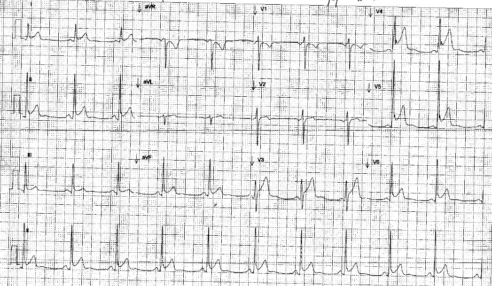
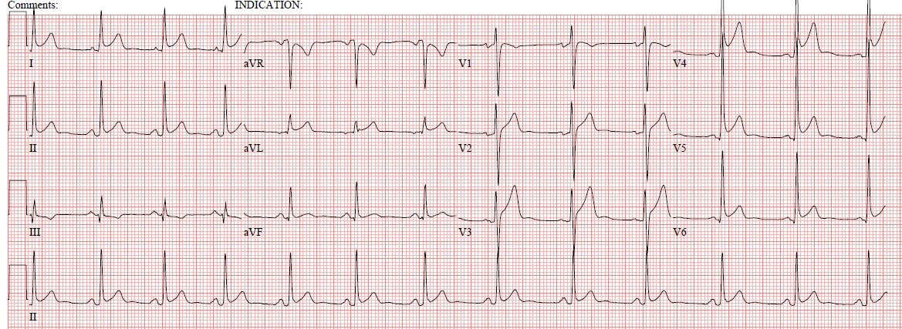
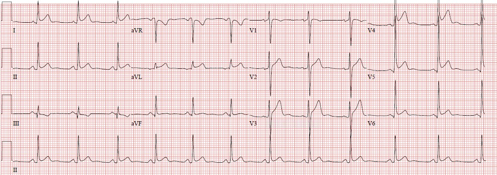

20/12/2013 — Nam 31 tuổi đau hạ sườn phải và có tiền sử viêm màng ngoài tim. Bài do một sinh viên y khoa gửi, kèm bình luận tuyệt vời về thiên kiến (bias)!
Bản dịch tiếng Việt của bài "31 Year Old Male with RUQ Pain and a History of Pericarditis. Submitted by a Med Student, with Great Commentary on Bias!" – Dr. Smith’s ECG Blog. Giữ nguyên toàn bộ 5 hình ảnh của bản gốc.
Bài này do một sinh viên y khoa tuyệt vời gửi đến, người muốn được giấu tên:
(Cập nhật ngày 2/6/2020): Giờ tôi có thể nói rằng bài này do Pendell Meyers gửi khi anh ấy còn là sinh viên) @PendellM
Một nam giới 31 tuổi có tiền sử viêm màng ngoài tim do virus cách đây một
năm đến khám vì đau hạ sườn phải (RUQ). Đây là điện tâm đồ ban đầu của anh tại khoa cấp cứu (ED):

Điện tâm đồ cũ duy nhất có được là từ một năm trước, trong lần nhập viện khi anh được chẩn đoán viêm màng ngoài tim:


Bạn nghĩ gì? Các điện tâm đồ này cho thấy điều gì? Kế hoạch của bạn
cho bệnh nhân này là gì?
Đây là diễn biến câu chuyện từ góc nhìn của tôi, theo đúng trình tự lúc đó (tiến cứu):
Tôi được cho xem điện tâm đồ này và được biết nó thuộc về một nam giới 31
tuổi có tiền sử viêm màng ngoài tim, nay đau hạ sườn phải và đau lưng. Khi chưa
gặp bệnh nhân, cách đọc của tôi với điện tâm đồ đầu tiên là: nhiều khả năng là ST chênh lên biến thể
bình thường (tái cực sớm), với một khả năng nhỏ là viêm màng ngoài tim,
và gần như không có khả năng tắc mạch vành cấp (STEMI). Tôi lập tức
nghi ngờ rằng bệnh nhân này thực ra chưa bao giờ bị viêm màng ngoài tim trước đây – với tôi,
khả năng cao hơn nhiều là đây đơn giản chỉ là điện tâm đồ nền của anh, vốn bị
đọc nhầm lặp đi lặp lại thành viêm màng ngoài tim, với quán tính chẩn đoán (diagnostic
momentum) ngày càng lớn mỗi lần anh đến khám với “tiền sử viêm màng ngoài tim” cùng bất kỳ
triệu chứng không đặc hiệu nào ở gần ngực.
Vậy hãy cùng xem lại các điện tâm đồ:


các chuyển đạo trước tim. Có ST chênh lên rõ ở V2-V6, I, aVL và II.
Có ST chênh xuống nhẹ tất yếu (obligate) ở aVR. Sóng T có kích thước tương xứng
với QRS. Có khía điểm J (J-point notching) ở V4, V5, có thể cả V6, và II.
Có sóng T đảo ngược ở III. Nếu bạn quan tâm đến dấu hiệu S1Q3T3, thì có sóng Q hẹp
ở chuyển đạo III kèm sóng T đảo ngược. Cũng hợp lý khi tự hỏi liệu sóng T đảo ngược soi
gương ở III, kèm ST chênh xuống nhẹ, có phải do nhồi máu cơ tim hay không, nhưng Dr. Smith nói rằng nó trông không giống nhồi máu cơ tim. Có đoạn PR chênh xuống
ở các chuyển đạo II, V4, V5, V6, và có lẽ ở các chuyển đạo khác. Theo mắt
tôi, đoạn PR chênh xuống rõ nhất ở chuyển đạo II, khoảng 0,5 mm. Có đoạn PR chênh lên tất yếu ở
aVR, có lẽ cũng 0,5 mm. Độ lệch đoạn PR như vậy nằm trong giới hạn bình thường của tái cực nhĩ. Một số chuyển đạo cho thấy đường nền dốc xuống
một cách nhất quán sau mỗi QRS. Ở V6, tỷ số ST/sóng T vào khoảng 0,5 mm/3,5 mm
= 0,14, tùy thuộc vào vị trí đo chính xác. Nếu đang cân nhắc STEMI
thành trước, các giá trị liên quan cho công thức Smith (phương trình) là: ST chênh lên ở V3 tại 60 ms sau điểm J =
4 mm, QTc = 372 ms, và R ở V4 = 33 mm, cho ra giá trị phương trình là 15,974,
rõ ràng nhỏ hơn 23,4 và do đó rất ít khả năng là STEMI.

Đoạn PR chênh xuống ít hơn một chút, và ST chênh lên nhiều hơn một chút
so với biên độ sóng R.
Đây là phần còn lại của thông tin lâm sàng:
Các dấu hiệu sinh tồn trong giới hạn bình thường. Cơn đau khu trú
ở hạ sườn phải và lan vòng quanh thành ngực ra sau tới xương bả vai phải. Cơn đau
bắt đầu từ từ vào tối hôm trước, sau khi bệnh nhân về đến nhà
sau một chuyến xe buýt 4 giờ. Anh cho biết cơn đau lúc có lúc không, nặng hơn
khi ngồi dậy và cúi người ra trước, và nặng hơn khi hít vào. Anh nói
rằng cơn đau không giống đợt viêm màng ngoài tim trước đây, và
không liên quan đến bữa ăn. Anh phủ nhận đau ngực, khó thở, buồn nôn, sốt,
ớn lạnh, phát ban, ho và đau chân. Tuy nhiên, điều dưỡng phân loại đã ghi một ghi chú
nói rằng anh có thừa nhận đau ngực hôm qua, điều mà anh xác nhận một cách mơ hồ
khi được hỏi lại. Anh thừa nhận có khiêng vài vật nặng cách đây vài ngày
nhưng phủ nhận chấn thương.
Khám thấy phổi trong, không đau hay
sưng chân, và cơn đau khi hít vào tăng lên khi ấn
dưới bờ sườn phải. Tiếng tim và tiếng phổi
bình thường. Không có tiếng cọ màng ngoài tim.
Siêu âm tại giường tìm sỏi mật cho kết quả âm tính, và không thấy
tràn dịch màng ngoài tim hay rối loạn vận động thành. X-quang ngực âm tính.
Amylase, lipase và xét nghiệm chức năng gan (LFT) cũng bình thường.
Troponin lúc 4 và 8 giờ đều âm tính. Chúng tôi ghi thêm ba điện tâm đồ
liên tiếp trong suốt thời gian anh ở khoa, tất cả đều giống hệt điện tâm đồ lúc đến khám.
Phần lớn nhóm điều trị cho rằng điện tâm đồ này rõ ràng
chẩn đoán viêm màng ngoài tim vì có đoạn PR chênh xuống kèm ST chênh lên
lan tỏa. Đến lúc này nhóm tranh luận xem nên cho anh về nhà kèm
hẹn tái khám tim mạch, hay làm D-dimer (mặc dù anh rõ ràng
âm tính theo tiêu chuẩn PERC và có điểm Wells 0-1).
D-dimer tăng ở mức 942, và chụp CT mạch máu
ngực sau đó cho thấy thuyên tắc phổi (PE) dưới phân thùy ở thùy dưới hai
bên kèm tràn dịch màng phổi phải lượng ít.
Anh được nhập viện để điều trị kháng đông và tìm các bất thường
đông máu có thể có. Tất cả xét nghiệm đông máu đều trong giới hạn
bình thường, và các thăm dò sau đó không tìm thấy nguyên nhân nào của
tình trạng tăng đông. Anh được xuất viện về nhà với thuốc kháng đông.
Xem lại hồ sơ cũ không thấy thêm bằng chứng xác định nào hơn của
viêm màng ngoài tim (tràn dịch màng ngoài tim, tiếng cọ màng ngoài tim) trong lần
“viêm màng ngoài tim” ban đầu. Anh có một điện tâm đồ khác được ghi lúc xuất viện, một ngày sau
khi nhập viện:


ở V6 lại lớn hơn một chút.
Chẩn đoán cuối cùng trong ghi chép khoa cấp cứu của anh: thuyên tắc phổi VÀ
viêm màng ngoài tim. Tất nhiên, có thể anh bị cả viêm màng ngoài tim tái phát
lẫn PE hai bên cùng lúc, nhưng khả năng này có vẻ thấp hơn nhiều
so với việc bị PE trên nền một điện tâm đồ nền có tái cực sớm và đoạn PR
chênh xuống nhẹ. Các dấu hiệu khám thực thể, bệnh sử, triệu chứng, điện tâm đồ và diễn tiến
lâm sàng của anh cũng đều ủng hộ điều này. Tôi lo rằng anh sẽ tiếp tục bị
chẩn đoán nhầm là viêm màng ngoài tim trong tương lai, và rằng một ngày nào đó khi anh có một
nguyên nhân đau ngực có thể nghiêm trọng, chẩn đoán và điều trị có thể bị
bỏ sót hoặc chậm trễ vì lỗi bị truyền đi này.
Tôi cảm thấy ca nàycó rất nhiều điểm giảng dạy tuyệt vời:
1) Trong và sau ca này, tôi
nhận ra rằng có thể có sự hiểu lầm phổ biến
về các dấu hiệu điện tâm đồ kinh điển gắn với viêm màng ngoài tim. Đoạn PR chênh xuống lan tỏa
(kèm đoạn PR chênh lên soi gương ở aVR) và/hoặc ST chênh lên lan tỏa
thường được quảng bá là gợi ý viêm màng ngoài tim, nhưng giá trị chẩn đoán
thực sự của các dấu hiệu này là gì? Mức đoạn PR chênh xuống bao nhiêu thì nên
được coi là gợi ý viêm màng ngoài tim so với biến thể bình thường? Chúng ta đã thấy nhiều
ví dụ trên blog này và các blog khác rằng ST chênh lên và/hoặc đoạn PR chênh xuống có thể là
biến thể bình thường:
Các bài trước về tái cựcnhĩ:
https://drsmithsecgblog.com/search/label/atrial%20repolarization%20wave (các bài về sóng tái cực nhĩ trên blog)
Các bài trước về viêm màng ngoài tim:
https://drsmithsecgblog.com/search/label/pericarditis (các bài về viêm màng ngoài tim trên blog)
Nguyên nhân gây đoạn PRchênh xuống:
-Biến thể bình thường (tái cực nhĩ)
-Viêm màng ngoài tim
-Nhồi máu nhĩ (xem báo cáo ca bệnh này: http://www.ncbi.nlm.nih.gov/pmc/articles/PMC2651425/?report=classic)
Đoạn PR chênh xuống bao nhiêutrong viêm màng ngoài tim?
Đáng tiếc là dường như không có bằng chứng tốt để trả lời câu
hỏi này. Trước đây blog này từng nêu rằng đoạn PR chênh xuống từ 0,8 mm
trở lên có thể khá đặc hiệu cho viêm màng ngoài tim (dựa trên
một bài báo năm 1973 trên Archives of Internal Medicine của Charles và cộng sự, nhan đề “Atrial
Injury Current in Pericarditis” (Dòng tổn thương nhĩ trong viêm màng ngoài tim), bài này tổng quan cả y văn cũ hơn nữa và
gợi ý rằng đoạn PR chênh xuống tới 0,5 mm là rất thường gặp, trong khi từ 0,8 mm trở lên
gợi ý viêm màng ngoài tim).
Làm thế nào để phân biệt tái cực sớm với
viêm màng ngoài tim bằng điện tâm đồ?
Một cách có thể giúp phân biệt hai tình trạng này là tỷ số ST/sóng T
ở các chuyển đạo bên, thường là V6. Theo các nghiên cứu sau đây,
tỷ số ST/sóng T từ 0,25 trở lên nghiêng về viêm màng ngoài tim hơn là tái cực
sớm.
http://www.ncbi.nlm.nih.gov/pubmed/22814363 (tóm tắt nghiên cứu trên PubMed)
http://www.ncbi.nlm.nih.gov/pubmed/7074735 (tóm tắt nghiên cứu trên PubMed)
Hãy nhớ rằng biên độ đoạn ST và sóng T tất yếu thay đổi
theo vị trí đặt điện cực, và chúng ta cũng biết rằng ST chênh lên của tái cực
sớm có thể thay đổi động, tùy thuộc vào nhiều yếu tố:
https://drsmithsecgblog.com/2011/09/st-elevation-of-early-repolarization.html (bài trên blog về ST chênh lên của tái cực sớm)
2) Các lỗi nhận thức
mà ca này cho thấy:
Thiên kiến neo (anchoring bias)/Quán tínhchẩn đoán (diagnostic momentum):
“Tiền sử viêm màng ngoài tim” của anh chắc chắn đã ảnh hưởng đến
cách nhìn nhận và diễn giải điện tâm đồ của anh. Với hầu hết mọi người, nó tạo thiên kiến nghiêng về
việc lại chẩn đoán viêm màng ngoài tim. Tuy nhiên, với bản thân tôi (và tôi đoán là cả những độc giả khác của
blog này), nó lại ảnh hưởng đến nhận thức của tôi theo hướng hoàn toàn ngược lại – nó
lập tức khiến tôi nghi ngờ chẩn đoán nhầm và cảnh giác với những nguy hiểm của việc
chẩn đoán viêm màng ngoài tim (và do đó bỏ sót các chẩn đoán khác).
Sự tự tin thái quádo hứng thú khoa học khơi dậy:
Có một điều có thể còn đáng lo hơn
sự hiểu lầm phổ biến về các dấu hiệu “kinh điển” của viêm màng ngoài tim – đó là sự tự tin mà người ta mang theo khi
hiểu lầm chúng. Tất cả chúng ta đều đã thấy sự tự tin mù quáng như vậy và chính mình cũng góp phần
vào nó lúc này hay lúc khác. Đó là một khiếm khuyết vốn có trong bản chất con người, và
việc đọc điện tâm đồ có thể là một ví dụ điển hình về nơi thiên kiến này xảy ra. Tôi sẽ là
người đầu tiên thừa nhận rằng thật dễ chịu khi đưa ra một chẩn đoán tương đối hiếm dựa
trên việc diễn giải những đường nguệch ngoạc trên một tờ giấy. Còn gì thú vị bằng việc chỉ cần
liếc qua một ca nhịp chậm kỳ lạ với blốc AV độ 3 (3rd-degree block) và ST chênh lên
bất thường ở V1-V2, trong một căn phòng đầy các bác sĩ cấp cứu và bác sĩ tim mạch đang bối rối, lo lắng
tranh luận giữa việc đưa bệnh nhân lên phòng thông tim hay đặt máy tạo nhịp
qua tĩnh mạch, mà lập tức biết rằng toàn bộ bệnh cảnh là do tăng kali máu và
nhiều khả năng sẽ đáp ứng với calci??? Câu trả lời: nó gần như say sưa đến mức mù quáng,
trừ khi chúng ta kiểm soát được các thiên kiến của tâm trí mình qua siêu nhận thức (metacognition). Chúng ta phải
giám sát sự hứng khởi khoa học của mình để nó không che mắt chúng ta trước
những gì thực sự quan trọng.
Trong một số tình huống khi mọi người đang cân nhắc viêm màng ngoài tim
trên điện tâm đồ, cảm giác như có một sự phấn khích rõ rệt trong không khí: “Ồ nhìn
đoạn PR chênh xuống kèm chênh lên ở aVR kìa! – kinh điển của viêm màng ngoài tim.” Những người khác được gọi đến xem điện tâm đồ,
và mọi người đều đồng ý: “ca hay quá!” Trong những tình huống này, chúng ta không chỉ tin
rằng đó là viêm màng ngoài tim – mà ở một mức độ nào đó chúng ta còn muốn nó
là viêm màng ngoài tim. Là bác sĩ, tự bản chất ta thấy dễ chịu khi nghĩ
rằng mình đã tìm ra bệnh nhân bị gì; thật dễ chịu khi nghĩ
rằng chính kiến thức về điện tâm đồ của mình đã đưa ra chẩn đoán thú vị đó. Tôi tin
rằng cách chúng ta xử lý những cảm xúc này là điều tạo nên khác biệt trong những ca như vậy.
Liệu chúng ta có vô tình để cảm giác đó chi phối suy nghĩ của mình? Liệu chúng ta có để nó che mắt
trước mọi dữ liệu về sau có thể bác bỏ suy nghĩ hiện tại? Liệu chúng ta có để nó bóp méo
cách ta nhìn nhận khám thực thể, bệnh sử hay kết quả xét nghiệm? Hay ảnh hưởng đến hướng
xử trí? Liệu chúng ta có thể nhận ra cách vô số thiên kiến
nhận thức đã biết ảnh hưởng đến mình theo thời gian thực khi có bệnh nhân trước mặt hay không? Tâm trí chúng ta
dường như được thiết kế sao cho, nếu ta không có ý thức cố gắng hiểu
những ảnh hưởng của chính suy nghĩ của mình ngay khi đang suy nghĩ, thì ảnh hưởng của chúng sẽ trôi qua
mà không được nhận ra và tác động của chúng (dù có ích hay có hại) sẽ thay đổi diễn tiến của
bệnh nhân.
Khi một bác sĩ nội trú khác trong nhóm lên tiếng bày tỏ lo ngại
rằng đây không phải viêm màng ngoài tim, tôi đã chứng kiến nhiều thiên kiến nhận thức này
diễn ra trong thực tế. Cả nhóm nói với anh ấy, không dẫn nguồn nào, rằng “bất kỳ đoạn PR chênh xuống nào cũng rất
đặc hiệu cho viêm màng ngoài tim.” Anh ấy chỉ ra rằng vị trí đau của bệnh nhân không
phù hợp với viêm màng ngoài tim và được mô tả là khác biệt rõ rệt so với
đợt “viêm màng ngoài tim” trước đây của anh ta, và rằng cơn đau lại tăng lên khi ngồi dậy và cúi người ra trước, thay vì giảm đi – trớ trêu thay,
nhóm đáp lại rằng đó có thể là những dấu hiệu lâm sàng không đáng tin cậy,
kinh điển nhưng không thực tế trong nhiều trường hợp. Người ta cũng đã chỉ ra (bằng các ví dụ từ blog
này) rằng ST chênh lên của anh ta về hình thái phù hợp hơn với tái cực
sớm, với tỷ số ST/T < 0,25 ở V6 và khía điểm J. Nhưng có vẻ
như họ đã quyết định sẵn sẽ bác bỏ hoặc gạt đi mọi
thông tin mâu thuẫn với chẩn đoán viêm màng ngoài tim (thiên kiến xác nhận
đang hoạt động).
Khi bạn thấy mình phải xóa những sọc vằn trên con
ngựa vằn của mình để nó khớp với bệnh cảnh lâm sàng, có lẽ đã đến lúc nghĩ đến
những con ngựa! Và điều ngược lại cũng đúng – nếu bạn thấy mình phải vẽ
sọc lên những con ngựa của mình để tự thuyết phục rằng chẩn đoán “ngựa” là đúng,
thì có thể bạn đã bắt quả tang chính tâm trí mình đang “buôn lậu ngựa vằn”.
Quan trọng hơn, trong cấp cứu chúng ta quan tâm điều gì nhất? Amal
Mattu sẽ trả lời rằng: “sư tử, hổ và gấu” – những bệnh lý
đe dọa tính mạng, bất kể tần suất của chúng. Điều này dẫn tôi đến
điểm tiếp theo:
3) Tầm quan trọng
của việc nghi ngờ chẩn đoán viêm màng ngoài tim dựa trên điện tâm đồ trong cấp
cứu.
Tôi tin rằng có những tác hại tiềm tàng đáng kể khi
chẩn đoán viêm màng ngoài tim dựa trên điện tâm đồ trong cấp cứu.
–STEMI có thể bị
chẩn đoán nhầm thành viêm màng ngoài tim (theo lời Dr. Smith, “chẩn đoán viêm màng ngoài tim là tự chuốc lấy nguy hiểm!”
https://drsmithsecgblog.com/2013/05/24-yo-woman-with-chest-pain-is-this.html)
–Tái cực sớm
có thể bị chẩn đoán nhầm thành viêm màng ngoài tim, khiến bác sĩ vội vàng
quy các triệu chứng cho viêm màng ngoài tim, từ đó tạo ra một “mồi nhử” để bất kỳ nguyên nhân nào khác
gây đau ngực/đau lưng (bóc tách, PE, hay bất cứ thứ gì) bị bỏ sót và không được điều trị.
Nhân tiện nói thêm, ca này còn đặt ra nhiều câu hỏi quan trọng
khác:
-Làm sao chúng ta thực sự biết được thuốc chống đông có lợi cho
PE? Làm sao biết được lợi ích vượt trội hơn nguy cơ của thuốc chống đông?
-Thuyên tắc phổi dưới phân thùy có thực sự quan trọng không?
Với câu hỏi thứ nhất, tôi xin giới thiệu bạn podcast tuyệt vời về PE của SMART EM
(http://www.smartem.org/podcasts/pulmonary-embolism-diagnosis-and-treatment)
và với câu hỏi thứ hai là một bài báo gần đây có thể bạn quan tâm (http://www.ncbi.nlm.nih.gov/pubmed/23736701)
Điều cần nhớ:
-Hãy cảnh giác với hậu quả của việc chẩn đoán nhầm bất kỳ nguyên nhân
quan trọng nào trong số các nguyên nhân gây đau ngực thành viêm màng ngoài tim
-Điện tâm đồ có thể gây ra nhiều sai lầm nhận thức khác nhau, giống như bất kỳ
thông tin y khoa nào khác, và trách nhiệm thuộc về chúng ta là phải hiểu và
giám sát chính suy nghĩ của mình để tránh những sai lầm này vì lợi ích của bệnh nhân